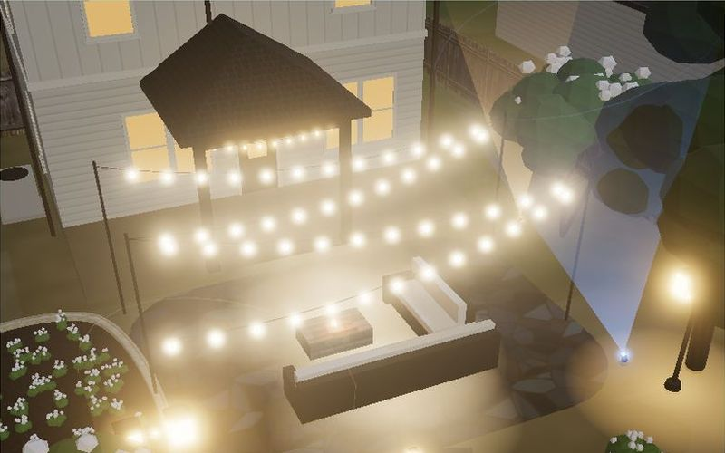
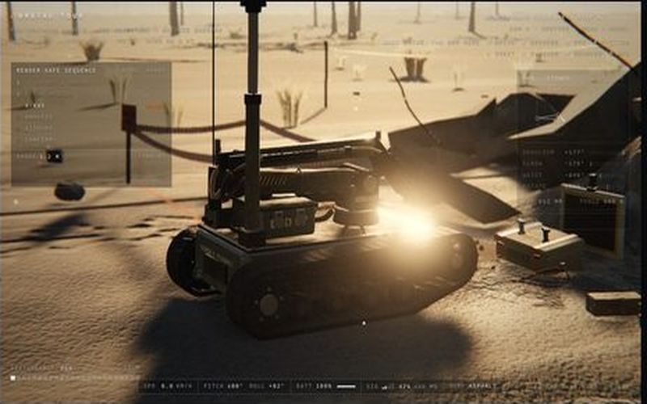
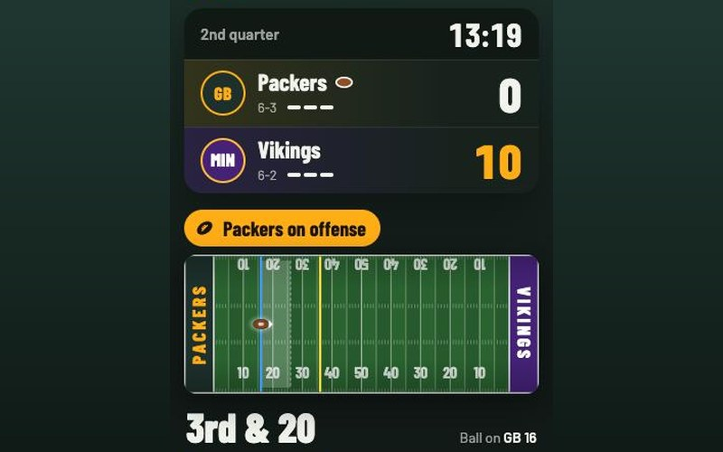
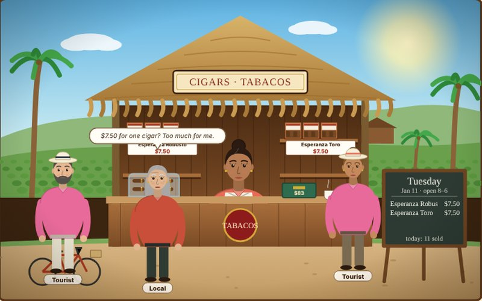

Backyard Planner
A 3D designer for a real backyard. Try out gardens, a pool, a puppy run or a fire pit, then compare layouts and get rough material amounts.
Jon Ragland · Musings
Things I build for fun. Each one runs in your browser, with nothing to install.

A 3D designer for a real backyard. Try out gardens, a pool, a puppy run or a fire pit, then compare layouts and get rough material amounts.

Drive a tracked EOD robot down a 2007 training lane and render an inert training aid safe: recon, X-ray, disrupt and a graded debrief.

Plan the week's dinners, get recipes sized to your family, and build a grocery list split across the stores you shop at.

Follow a Packers game live on a 2D field: ball spot, first-down line, offense or defense, down and distance, and every play of the drive.

Grow, cure and roll tobacco, then build a cigar business: a rolling workshop, a roadside stand, your own brand, and in the late game a flagship shop in the capital and markets abroad.